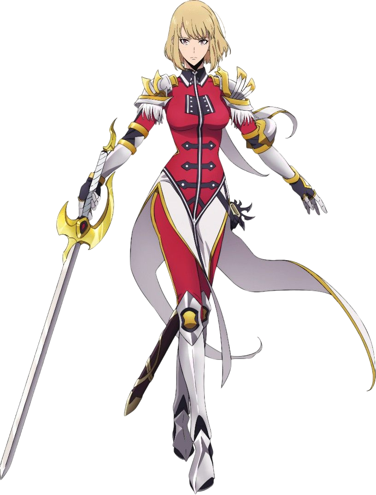
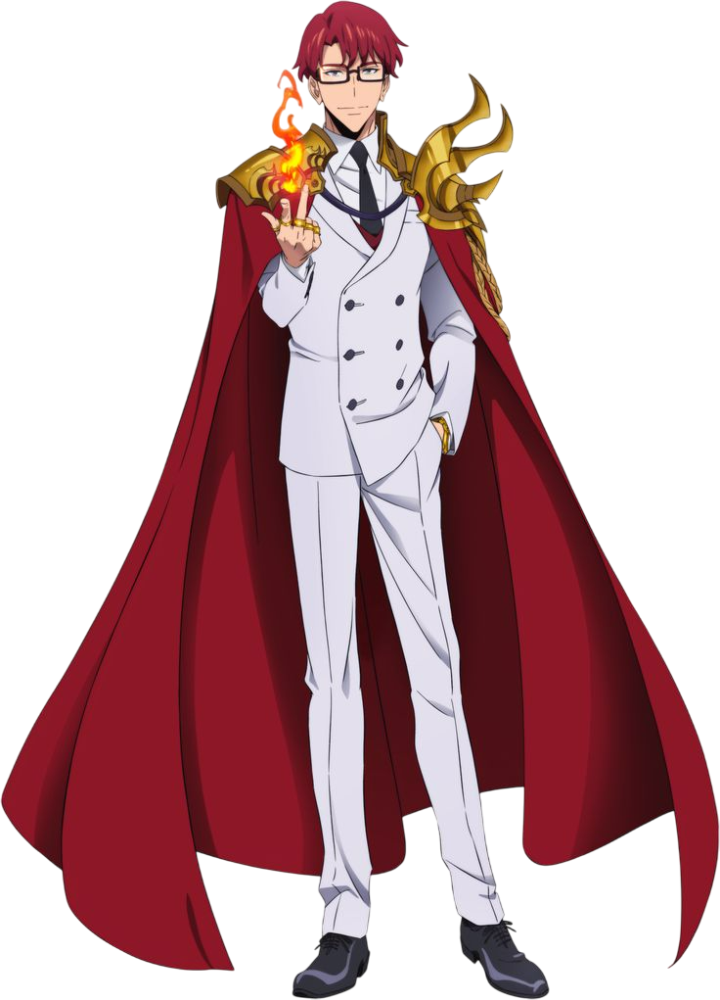

Sung Jin
Song Jin-Woo é apresentado como um caçador inicialmente fraco, conhecido como o “mais fraco de todos”, mas sua vida muda quando recebe um misterioso sistema que aumenta seu poder após cada batalha. Ao longo da história, ele evolui de alguém subestimado para um dos seres mais fortes do mundo, enfrentando monstros, governantes e sombras enquanto carrega o peso de proteger aqueles que ama. Sua jornada é marcada por superação, estratégia e uma transformação que redefine completamente seu destino.

Han Song-Yi
Song Jin-Woo é apresentado como um caçador inicialmente fraco, conhecido como o “mais fraco de todos”, mas sua vida muda quando recebe um misterioso sistema que aumenta seu poder após cada batalha. Ao longo da história, ele evolui de alguém subestimado para um dos seres mais fortes do mundo, enfrentando monstros, governantes e sombras enquanto carrega o peso de proteger aqueles que ama. Sua jornada é marcada por superação, estratégia e uma transformação que redefine completamente seu destino.

Yoo Jinho
Song Jin-Woo é apresentado como um caçador inicialmente fraco, conhecido como o “mais fraco de todos”, mas sua vida muda quando recebe um misterioso sistema que aumenta seu poder após cada batalha. Ao longo da história, ele evolui de alguém subestimado para um dos seres mais fortes do mundo, enfrentando monstros, governantes e sombras enquanto carrega o peso de proteger aqueles que ama. Sua jornada é marcada por superação, estratégia e uma transformação que redefine completamente seu destino.

Choi Jong-In
Song Jin-Woo é apresentado como um caçador inicialmente fraco, conhecido como o “mais fraco de todos”, mas sua vida muda quando recebe um misterioso sistema que aumenta seu poder após cada batalha. Ao longo da história, ele evolui de alguém subestimado para um dos seres mais fortes do mundo, enfrentando monstros, governantes e sombras enquanto carrega o peso de proteger aqueles que ama. Sua jornada é marcada por superação, estratégia e uma transformação que redefine completamente seu destino.
